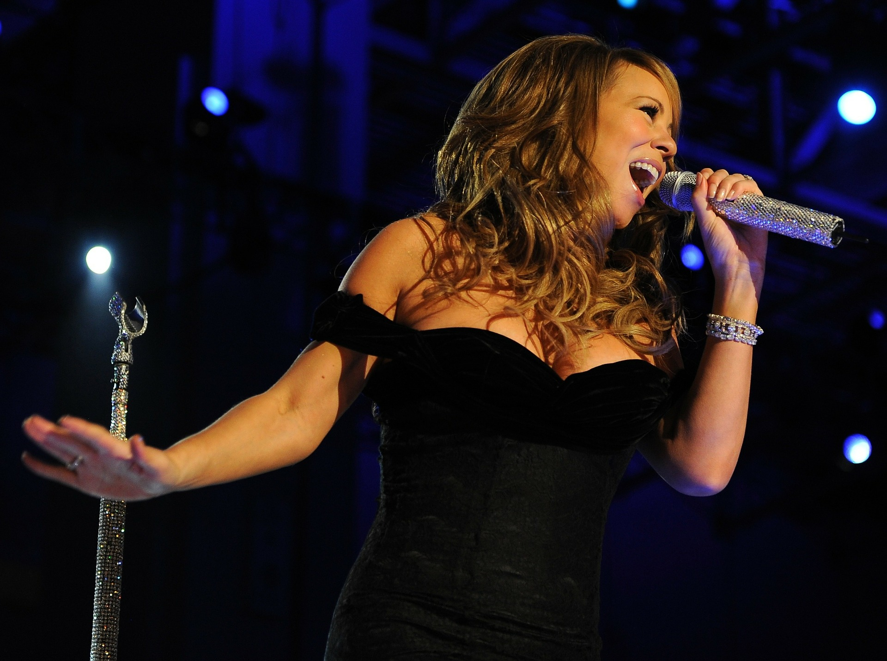

Kultúrne dedičstvo, jeho hodnoty a odkaz pre budúce generácie je pre nás ako rodinu veľmi dôležité.
Preto sme sa rozhodli v roku 2017 založiť túto nadáciu.
Jej účelom je rozvoj a ochrana duchovných a kultúrnych hodnôt, rozvoj vedy, vzdelania,umenia a umeleckej tvorby, a plnenie individuálne určenej pomoci pre jednotlivca alebo skupinu osôb pôsobiacich v oblasti umenia a ochrane kultúrnych hodnôt poskytovaním finančnej a nefinančnej podpory.
PODPORTE NÁS FINANČNE
zapojte sa do celonárodnej zbierky na realizáciu pamätníka
PAMÄTNÍK 100. VÝROČIA PODPÍSANIA TRIANONSKEJ MIEROVEJ ZMLUVY
Vzhľadom na momentálnu situáciu v súvislosti s opatreniami vlády je transparentný účet dočasne uzavretý. Pevne veríme, že v zbierke budeme spoločne pokračovať, keď to situácia dovolí. Za finančné dary, ktoré ste nám doposiaľ na realizáciu pamätníka poslali, Vám zo srdca ďakujeme.